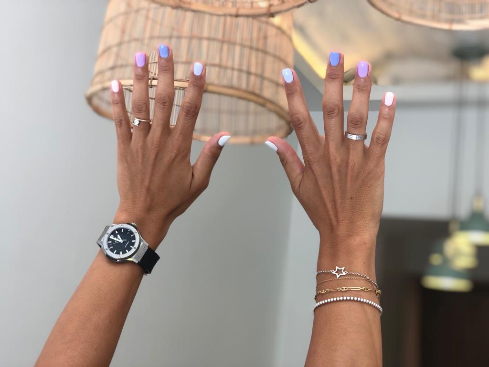

Blog
El esmaltado semipermanente ha llegado para quedarse y su amplia variedad de colores y texturas las
convierten en las favoritas en cualquier temporada del año. Dependiendo de la ocasión social se podría
utilizar una tendencia diferente, siempre con la intención de hacer resaltar esta técnica que cada día cobra
más y más fuerza debido a sus acabados únicos.
El esmaltado semipermanente es una técnica de manicura y pedicura que han resistido cualquier moda. Es una
técnica que cosiste en aplicar varias capas de esmalte, según sea el color deseado, para finalmente aplicar un
fijador y luego secar con luz ultravioleta. La gran ventaja del esmaltado semipermanente es que puede
permanecer intacto durante semanas y hasta un par de meses. Esto se debe a que la fusión de los materiales
termina convirtiéndose en una capa realmente resistente.
Aunque el esmaltado semipermanente sea resistente a un nivel muy amplio, en determinado momento deberán ser
restauradas. El instante ideal para hacer ese cambio es cuando el esmaltado de las uñas empieza a separarse de
la uña natural, debido a su proceso de crecimiento. Una vez conocida esta técnica es importante saber todas
las alternativas disponibles en cuanto a tendencias para escoger los colores, tonos y texturas adecuadas.
La tendencia correcta según tu tono de piel
Las variantes y acabados en esmaltado semipermanente pueden ser infinitas y dependerán directamente de la
creatividad e insumos tanto de quien las aplica como las necesidades y requerimientos de quien las desea.
Aunque ese puede ser un punto de partida, siempre es importante conocer cuáles son los colores que mejor van
con vuestra piel, esto debido a que será una aplicación duradera en las uñas y sería ideal que durante todo
ese tiempo sea algo realmente versátil.
El esmaltado semipermanente puede tomar como referente el tipo de piel. Las pieles más claras siempre
tendrán mejor efecto visual cuando se apliquen productos en tonos oscuros y fríos. Esta tendencia tendrá
como resultado que todas las miradas se enfoquen directamente sobre tus manos. Diferentes elementos, formas
y texturas se pueden aplicar sobre estos mismos tonos, las texturas brillantes también serán acertadas.

Para pieles más morenas, tostadas o bronceadas, los tonos cálidos y tierra serán perfectos. El efecto
visual que esto produce está mucho más enfocado a la armonía, elegancia y diversión. Tonos como amarillo
mostaza, terracota o verde olivo, darán ese look otoñal, mientas que los tonos como rojos y naranjas, se
verán mucho más femeninos y atrevidos. Este contraste con la piel es mucho más sutil que el de las pieles
claras, pero a su vez mucho más práctico.
Si lo que se busca es reproducir un tono natural que no se robe la atención por su color, sino más bien
por su sutileza, dependiendo de la piel, se puede optar por una tendencia nude, donde el color dará la
sensación de que no se lleva ningún tipo de producto o luce completamente limpio. El truco para
seleccionar el tono de color correcto, es tratar de simular el tono de la palma de la mano, que es el
mismo color que se logra apreciar a través de la uña. Es una de las tendencias más usadas.
Tendencias en esmaltado semipermanente según la época del
año y eventos
El esmaltado semipermanente es realmente versátil y según sea la época del año se puede utilizar algunas
tendencias más que otras. Empezando con el inicio del año donde el invierno hace estragos, es preferible
optar por tonos neutros sin mayor detalle, debido a que en esta época del año las manos estarán ocultas la
mayor parte del tiempo. Algunos tonos mate son ideales para que las manos se vean delicadas y cuidadas.
Entre más va avanzando el año, con la llega de la primavera y el verano, podrás jugar con los colores y
texturas, algunos tonos cítricos y llamativos serán perfectos, al igual que algunas texturas y formas
pueden tener su espacio. En esta época del año es importante saber a qué tipo de eventos asistirás, para
optar por algunos acabados metálicos que siempre funcionan, sobre todo para eventos nocturnos.
En el verano, precisamente, el esmaltado semipermanente puede jugar con algunos tonos neón y colores
primarios. Si esta temporada incluirá visitas a la playa, se puede seleccionar un tono que haga contraste
con el traje de baño o ropa de playa, visualmente dará el toque final al look de esta época del año.
Cuando las temperaturas vuelvan a bajar serán los tonos tierra los correctos para hacer brillar las manos
y pies en todo momento.
Es importante seleccionar esmaltado semipermanente que no solo sea duradero, sino que reflejen nuestro
estado de ánimo, aunque sea una zona mínima del cuerpo, la psicología del color nos ensaña que con
pequeños detalles podemos contarle a los demás cómo nos sentimos, solo con vernos.